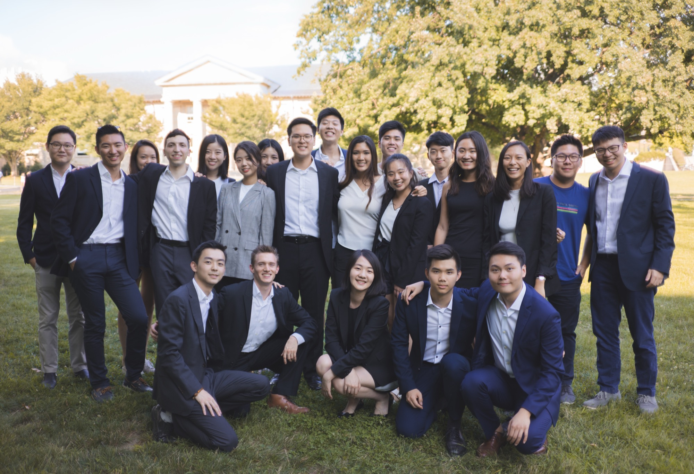
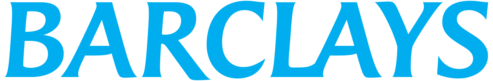
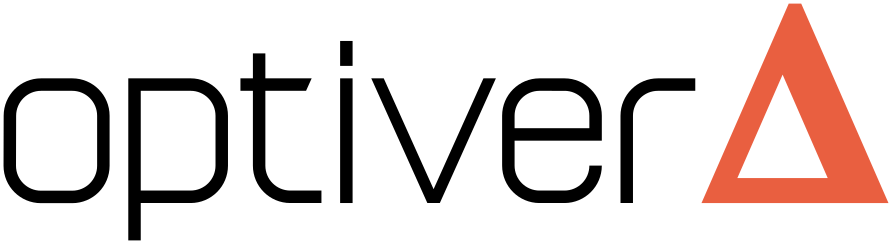

New Member Education
A 10-week series of workshops, speaker panels and mock interviews, led by senior members.
See recruitmentA 10-week education series, a mentor for every new member, and a global network of alumni.
Applications close September 16
GCC Cornell is an independent organization with a network that outlasts Ithaca: 100+ alumni in 25+ cities, from New York and San Francisco to London, Hong Kong and Singapore — still showing up for each other.

A 10-week education series, a mentor for every new member, and a family that outlasts graduation — at Cornell since 2009.
A 10-week series of workshops, speaker panels and mock interviews, led by senior members.
See recruitment
Every new member is paired with an upperclassman buddy — for academics, recruiting and everything in between.
Meet membersSemesterly banquets, the retreat, alumni dinners and road trips — lifelong friendships with 100+ alumni who stay close.
Alumni networkA mentor from week one.
A family long after graduation.






Every Cornell student interested in business and professional development is welcome — any background, any major, no prior finance or consulting experience expected. Fall 2026 applications close September 16.